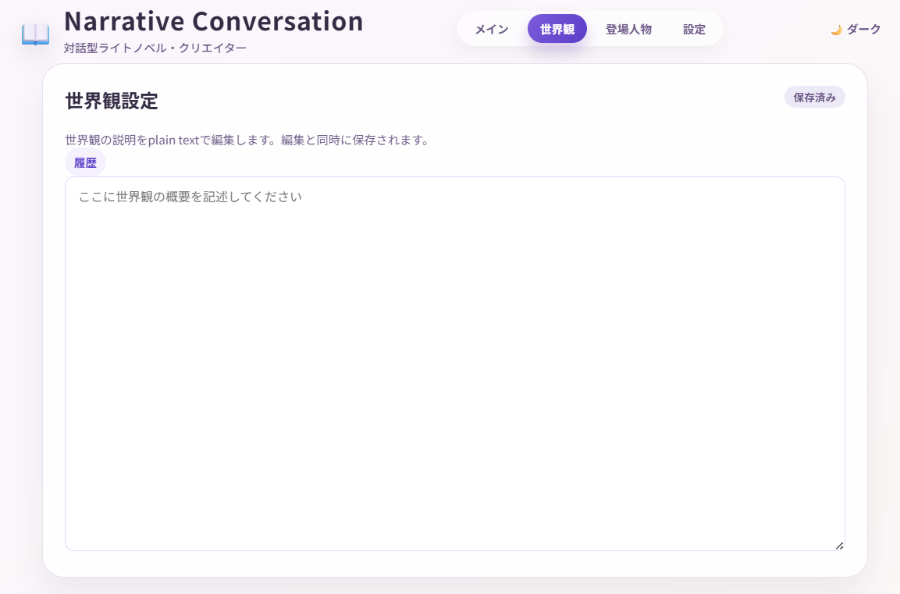
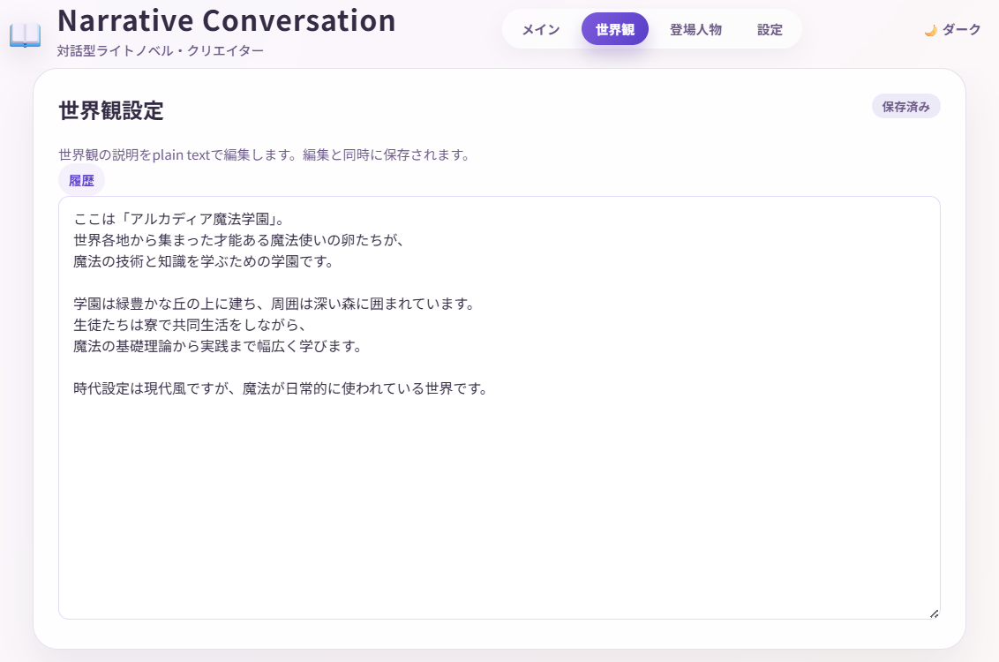
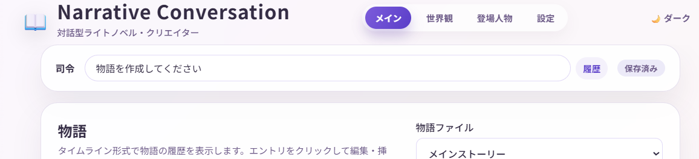
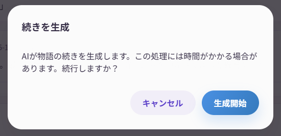
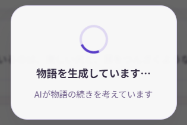
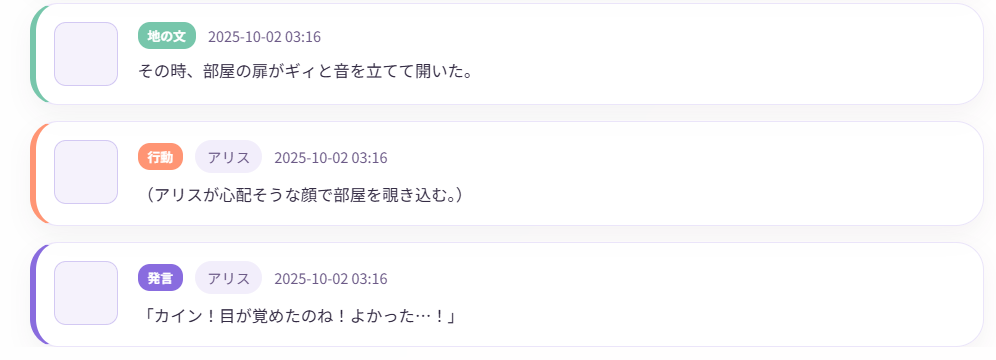
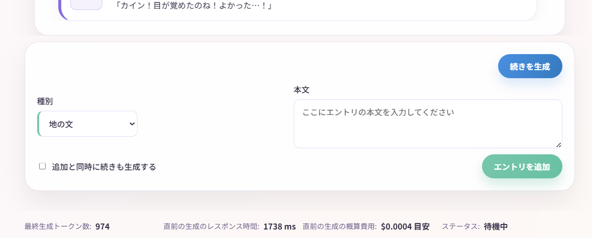
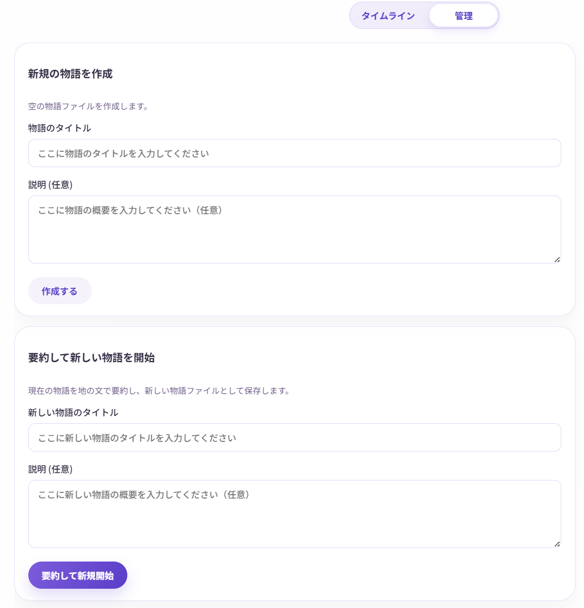

物語を作る
このページでは、Narrative Conversationで初めて物語を作る手順を、ステップバイステップで説明します。
物語作成の基本的な流れ
初期設定時に最初の物語ファイルは自動的に作成されています。以下の手順で物語を作っていきましょう。
- 世界観を設定
- キャラクターを作成
- AIに物語を生成させる
- 編集・分岐・保存
ステップ1: 世界観を設定する
物語の舞台や設定を決めます。
1-1. 世界観ビューを開く
上部メニューから 「世界観」 をクリック

1-2. 世界観を入力
テキストエリアに、物語の世界観を自由に書きます。
入力例：
ここは「アルカディア魔法学園」。
世界各地から集まった才能ある魔法使いの卵たちが、
魔法の技術と知識を学ぶための学園です。
学園は緑豊かな丘の上に建ち、周囲は深い森に囲まれています。
生徒たちは寮で共同生活をしながら、
魔法の基礎理論から実践まで幅広く学びます。
時代設定は現代風ですが、魔法が日常的に使われている世界です。

世界観の書き方のコツ
- 箇条書きでもOK、自由な文章でもOK
- 時代、場所、特徴的な要素を書く
- 既存の小説やアニメの設定を参考にしてもOK
- AIが理解しやすいよう、具体的に書く
- YAMLやJSON形式で書くと、AIの注意が抜けにくく崩れにくいという説があります。
入力すると、右上に 「保存済み」 と表示されます（自動保存）。
ステップ2: キャラクターを作成する
物語に登場するキャラクターを設定します。
2-1. 登場人物ビューを開く
上部メニューから 「登場人物」 をクリック
2-2. 新しいキャラクターを追加
- 「新規追加」 ボタンをクリック
- キャラクター情報を入力：
入力例（主人公）：
- 名前: アリス
- 説明:
入力は自動で保存されます。
2-3. 複数のキャラクターを追加
同じ手順で、他のキャラクターも追加しましょう。
入力例（友人キャラ）：
- 名前: ボブ
- 説明:
キャラクター作成のコツ
- 最初は2〜3人から始めると管理しやすい
- 性格、年齢、特技、関係性を書くと良い
- 既存のキャラクターをテンプレートにしてもOK
- あとから追加・編集もできます
- YAMLやJSON形式で書くと、AIの注意が抜けにくく崩れにくいという説があります。
ステップ3: AIに物語を生成させる
いよいよ、AIに物語を作ってもらいます！
3-1. メイン画面に戻る
上部メニューから 「メイン」 をクリック
3-2. 司令や地の文を入力
「司令」 の入力欄に、AIへの指示を書きます。
デフォルトの司令：
これは最小単位(1要素づつ)で物語を生成する司令です。
これでもOKですが、一気に作ることもできます。(なお、一気に進めると結果的に料金も安くなります)
指示の例：
- 「物語を作成してください」
- 「アリスとボブが初めて出会うシーンを作ってください」
- 「授業中のシーンを作ってください」
- 「何か面白い事件を起こしてください」
- 「フラペチーノに興味を持たせてください」
- 「次の場面転換まで進行してください」
- 「次にダイスロールが必要な場面まで進めてください」

後に記載するように、地の文や指示、キャラクターの発言・行動も直接入力できます。
あらかじめ入力しておくと、方向性が定まりやすくなります。
3-3. 生成ボタンをクリック
画面右下の 「続きを生成」 ボタン（青色の丸いボタン）をクリック
3-4. 確認ダイアログ
生成を開始すると料金が発生するため、生成前の確認画面が表示されます。
(料金は、設定したAIモデルとトークン数に応じて決まりますが、多くの場合は1回あたり数円未満です)
進めてよければ、「生成開始」 ボタンをクリックします。

確認をスキップする設定
毎回確認が面倒な場合は、「設定」→「生成前確認をスキップ」にチェックを入れると省略できます。
3-5. 生成を待つ
AIが物語を生成します。数秒〜数十秒かかります。
生成中は、画面に「生成中...」と表示されます。

3-6. 生成完了！
生成が完了すると、タイムラインに新しいエントリが追加されます。
アニメーション機能がオンの場合、文字が1文字ずつ表示されます。

ステップ4: 物語を続ける
4-1. 続きを生成
同じように 「 生成」 ボタンをクリックすると、物語が続いていきます。
司令を変更することで、展開を変えることもできます：
- 「会話がたくさん起こるようにしてください」
- 「突然事件が起こる展開にしてください」
- 「場面を変えて、夜のシーンにしてください」
4-2. 自分で入力する
AIに任せるだけでなく、自分でエントリ(発言や行動)を追加することもできます。
司令を「アリスのセリフと行動だけ作ってください」とすれば、あなたはボブになりきって一緒に物語を進めることもできます。
画面右下からエントリタイプを選択：
- 発言（dialogue）: キャラクターのセリフ
- 行動（action）: キャラクターの行動
- 地の文（narration）: 説明文
- 指示（direction）: 物語への介入

司令と指示の使い分け
- 司令は今現在の物語の作成ルールをAIに指示するものです。物語上に残りません。例:「次の場面まで作成してください」
- 指示は物語の途中で特定の介入や指定をしたいときに使います。物語上に残ります。例:「ここで爆発が起こります」
- キャラクター名（発言・行動の場合）と内容を入力
- 「追加」 ボタンをクリック
- 満足行くまで追加・編集したら、「続きを生成」 ボタンをクリックして、物語を進めます。
エントリの編集・削除
エントリを編集する
- タイムライン上のエントリをクリックし、編集を選択
- 内容を修正
- 「保存」 (キャラクターの場合は 行動として保存 または 発言として保存 ) または 「キャンセル」
エントリを削除する
- エントリをクリック
- 「削除」 ボタンをクリック
- 確認ダイアログで 「削除」
エントリを挿入する
- 挿入したい場所の直前のエントリをクリック
- 前に挿入 または 「後に挿入」 を選択
- 新しいエントリを作成
自由に編集できるのがこのアプリの強み
通常のAIチャットと違い、過去の内容を自由に編集・削除・挿入できます。納得いくまで物語を調整しましょう！
「これよりあとの項目を全て削除」や「ここから分岐して別の物語ファイルにブランチを作成」も可能です。
物語を保存する
自動保存されます！
Narrative Conversationでは、編集内容が自動的に保存されます。
- エントリを追加・編集すると、数秒後に自動保存
- 右上の「保存済み」表示で確認できる
- 手動で保存する必要はありません
物語をエクスポートする
作成した物語を、他の形式で保存できます。
テキスト形式でエクスポート
- 「物語」パネルの 「管理」 タブをクリック
- 「エクスポート」 セクションで 「テキスト」 を選択
- 「エクスポート」 ボタンをクリック
- ブログやSNSに貼り付けやすいテキストが表示されます。コピーも可能です。
XML形式でエクスポート
AIが理解しやすい形式で保存されます。上級者向け。
詳しくは エクスポート機能 を参照してください。
複数の物語を管理する
2回目以降、別の物語を作りたい場合は以下の手順で新規作成できます。
新しい物語を作成する
- 「物語」 パネルの右側にある 「管理」 タブをクリック
- 「新規の物語を作成」 セクションで以下を入力：
- 物語のタイトル: 例）「SF宇宙戦記」
- 説明（任意）: 例）「宇宙を舞台にしたSF物語」
- 「作成する」 ボタンをクリック
- 「タイムライン」 タブをクリックして、物語の表示画面に戻ります。
作成完了
「物語ファイル」のドロップダウンに、作成した物語が表示されます。
物語が長くなってきて、生成時間やコストが気になる場合
「要約して新しい物語を開始」を使うと、現在の物語を要約して続きの物語を始められます。
要約の際の条件などは、応用的な設定画面の「要約設定(システムプロンプト)」で調整できます。

物語を切り替える
「物語ファイル」のドロップダウンから、別の物語を選択できます。
物語を削除する
「管理」タブの「削除」セクションから、不要な物語を削除できます。
削除は画面上からは元に戻せません
画面操作での復元はできませんが、以下を試してください：
backupsフォルダ内のstoriesに30世代までのバックアップが保存されています。
これをメモ帳などのテキストエディタで開き、dataフォルダ内の物語ファイルに上書きすることで、復元できる可能性があります。
次のステップ
基本的な使い方をマスターしたら、以下もお試しください：
- 物語の編集と分岐 - 高度な編集テクニック
よくある質問
Q. AIが思ったような展開にしてくれない
A. 「司令」で具体的に指示してみましょう。
例：
- 「続きを書いて」
- 「アリスが魔法を失敗して、爆発を起こすシーンを書いて」
Q. キャラクターの口調がおかしい
A. キャラクター説明に、口調や話し方を追加しましょう。
例：
Q. 生成に時間がかかる
A. 以下を確認してください：
- ネットワーク速度が遅い
- 使っているAIモデルが重い
- トークン数が多すぎる（設定で最大トークン数を調整）
Q. 料金が心配
A. 画面下部に推定コストが表示されます。
- まずは無料モデルで試す
- トークン単価の安いモデルを選ぶ
- 生成回数を控えめにする
さあ、あなただけの物語を作り始めましょう！